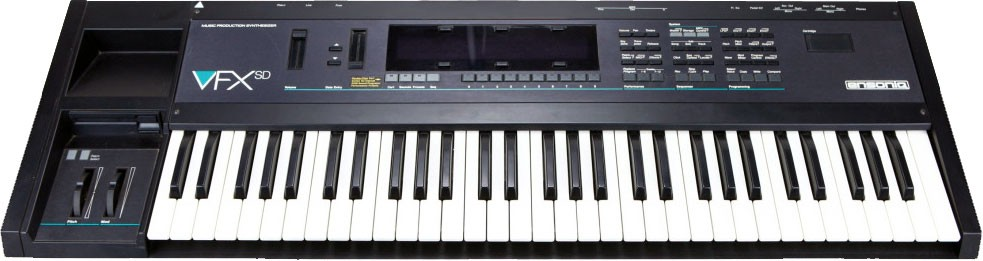

Fundada el 1982 als Estats Units per Robert Yannes i Bruce Crockett: ex-enginyers de Commodore i dissenyadors del chip de só SID, per al Commodore 64.
Al 1989 eix al mercat el VFX (antecesor del VFX-SD).
Al igual que el Korg M1, aquest sinte també ha sigut responsable de formar part de les cançons que hui anomenem "Remember".
Germán Bou sigué un dels usuaris d'aquest teclat a l'any 90: ell va ser el productor de Chimo Bayo, Boa Club, Roses Club, Achtung i mes éxits del principi dels 90.
Com a història personal: el 1987 va eixir al mercat el sampler Ensoniq Mirage i José Luis Macías (de la banda valenciana Comité Cisne) sigué un dels compradors; molts anys després el va vendre de segona ma a la banda Los Inhumanos i, finalment, ells el varen vendre a un ex-company meu de la banda que jo tenia (Vidas Perdidas).
Una volta em va tocar netejar-lo per dins: mai no he vist tant de "confeti" dins d'un aparell!!
